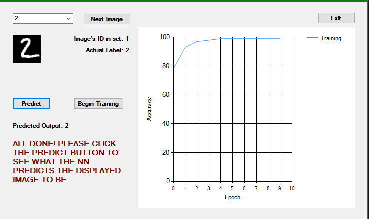
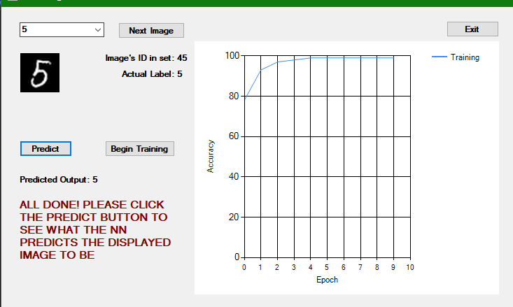
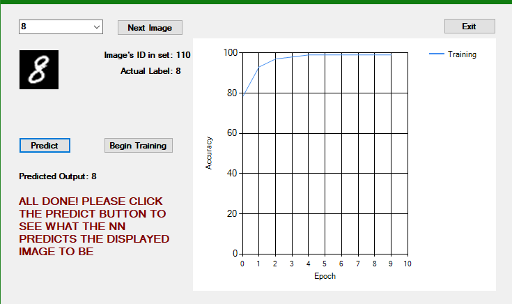

Summary
When I was working with Python libraries such as TensorFlow would allow for easy construction of neural networks. I learned the mathematics behind neural network construction in my machine learning and image processing class. I decided to dig deeper and construct a neural network that would recognize handwritten numbers.



Logistics
I needed a data set of handwritten numbers (0-9), and the MNIST data set provides just that (http://yann.lecun.com/exdb/mnist/).
The first step was to read and process all the MNIST images since they are compressed into binary files.
The website above it tells in which order you should be reading the bits. Goes first 32 bits are the magic number,
next 32 bits are the number of images, rows, and columns in that order. After, you begin receiving pixels for each image
(784 per image since each image is 28x28). An important note to make is that the files are stored in high-endian format
hence we need to reverse the bytes after each individual read. I repeated the same steps (similar for labels) to store the
training image set, training labels, test image set, and test labels.
First, we have no values to work off of to make predictions so we have to randomly generate weights that will influence the
first forward propagation results. Each image is 28x28 pixels so we have 784 input nodes that will take in values of either
1 or 0 where 1 means the pixel is black and 0 means its white, 1 middle layer (50 nodes), and an output layer (10 nodes).
Run through epochs (number of passes of the entire training data set the machine learning algorithm has completed)
until we have a satisfactory level of accuracy (determined by me). Each epoch will return 10 values that correspond
to numbers 0 through 9. Those numbers represent the classification confidence level of the neural network for numbers
0 through 9. Calculate the error and backpropagate to update the constants for all nodes (except for input nodes).
Once a satisfactory level of accuracy is reached (training is complete) I store all the constants and use them to calculate predictions
based on the image that the user selects.
Conclusion
This was a great project to boost my knowledge of how neural networks function and are built. I would like to do further experimentation to tinker with algorithms and play around with the number of nodes and levels to see if that would lead to better results quicker. To optimize training I am also considering using multithreading to get through epochs faster, which in return would minimize the time needed for training.